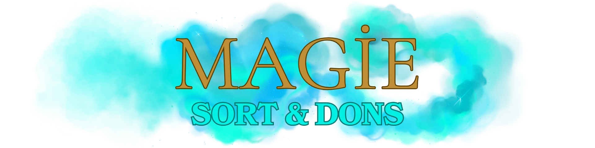

La magie est au cœur de l’univers. Son utilisation doit être mesurée et cohérente avec l’âge, le niveau et le rôle de votre personnage. Un élève de première année ne maîtrise pas les mêmes sorts qu’un Auror confirmé. Les abus de sorts offensifs ou l’utilisation incohérente de la magie seront sanctionnés.
Certains sorts sont donc soumis à une réglementation stricte.
Son utilisation doit être mesurée et cohérente avec :
- L’âge de votre personnage.
- Son niveau d’études.
- Son rôle et ses compétences.
Sortilèges impardonnables
- Avada Kedavra, Doloris et Imperium sont interdits en usage libre.
- Leur utilisation nécessite une validation via ticket avant chaque usage.
Tout abus → Retrait de l’accès + Sanctions HRP.
Dons magiques (Fourchelang, Animagus, Legilimencie, etc.)
- Interdits sans validation préalable du Responsable lore.
- Nécessitent une demande par ticket et un WL spécial.
- Le Responsable Lore choisit de valider ou non selon la cohérence et l’équilibre.
Tout abus → Retrait du Don + Sanctions HRP/RP.
Magie noire
- Son usage doit toujours être justifié en RP.
- Une utilisation excessive ou incohérente est interdite.
- Les sortilèges impardonnables ne doivent apparaître qu’en dernier recours et uniquement après validation du staff.
Le staff peut refuser une action si elle ne cadre pas avec le RP ou la trame en cours.
Toute trame lancée autour d’un don ou d’une mécanique spéciale sans validation du staff entraînera une sanction HRP.
Les trames personnelles nécessitant un GM doivent impérativement être validées en amont.